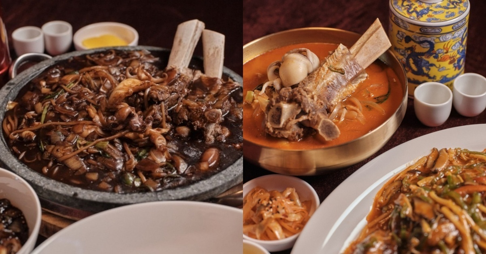

안녕하세요! 오늘은 2TV 생생정보 '결정적 한 수' 코너에서 소개된 대구 달서구 이곡동의 이색 중식 맛집을 소개해드리려고 합니다.
성서산업단지역에서 불과 200m 거리에 위치한 이곳! 짜장면 위에 왕갈비와 해물이 올라간다? "고기의 재발견"이라는 표현이 어울리는 이곳은 기존 중식의 틀을 깨는 이색 중식 한 상을 선보이는 곳입니다!
| 메뉴 | 특징 |
|---|---|
| 🥇 왕갈비 해물 돌판 짜장 | 뜨거운 돌판 위 왕갈비 + 해물 + 짜장의 파격 조합, 시그니처 메뉴 |
| 왕갈비 해물 짬뽕 | 왕갈비의 깊은 육즙과 해물의 시원함이 어우러진 프리미엄 짬뽕 |
| 생등심 두툼 탕수육 | 두툼하게 썬 생등심을 사용한 겉바속촉 특제 탕수육 |
| 어향가지 새우 | 바삭한 새우와 부드러운 가지의 중식 정통 요리 |
| 몽글몽글 초당순두부 짬뽕 | 부드러운 초당순두부가 들어간 독특한 짬뽕 |
| 유니짜장면 | 고기와 채소가 잘게 다져진 정통 유니짜장 |

"짜장면에 왕갈비라니, 처음엔 반신반의했는데 한 입 먹고 반했어요. 돌판에 나와서 끝까지 뜨겁고, 탕수육도 쫄깃함이 장난 아닙니다!"
지하철: 대구 지하철 2호선 성서산업단지역, 이곡역, 계명대역 하차 후 도보 이용
버스: 달서구 이곡동 방면 시내버스 이용
주차: 자체 주차장 이용 가능
📍 대구 달서구 달구벌대로251안길 5-6 | ☎ 0507-1481-7773
※ 본 포스팅은 KBS 2TV 생생정보 방송 내용을 기반으로 작성되었습니다. 방문 전 영업시간과 메뉴를 확인해주세요.